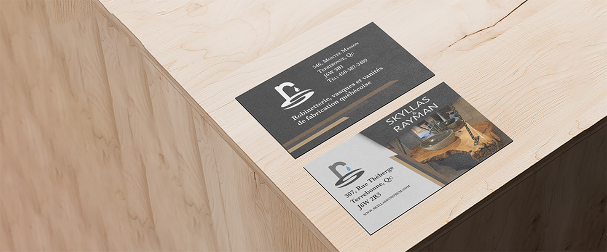

SKYLLAS & RAYMAN
Branding
Description:
This logo emerges from the need to translate the unique identity of Skyllas & Rayman, experts in luxury sinks and faucets in Quebec. The challenge was to convey the essence of the company while imparting its core values and distinctiveness. I designed this logo to harmonize luxury and elegance, seamlessly blending functionality and refinement. The letters ‘R’ and ‘S’ subtly symbolize faucet and sink, embodying our commitment to excellence with simplicity. The integration of a water droplet resolves the form-function harmony, amplifying the visual and organic dimension. Thus, this logo captures luxury, functionality, elegance, and the commitment to quality of Skyllas & Rayman.

